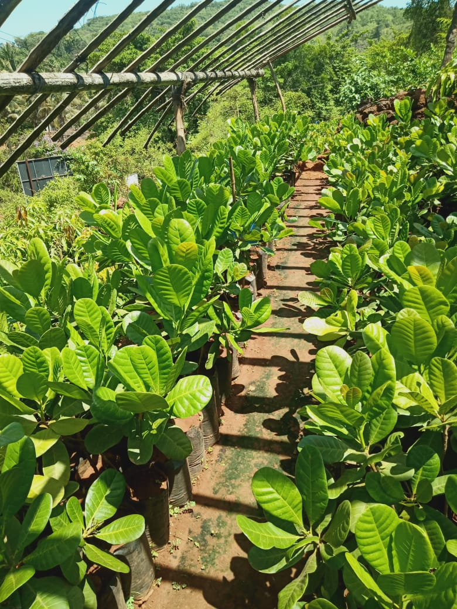
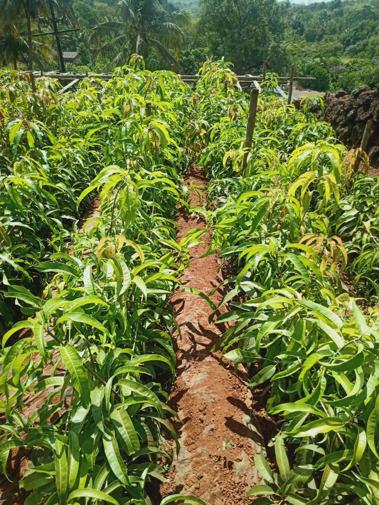

Nurseries grow plants in open fields, on container fields, in tunnels or greenhouses.
In open fields, nurseries grow decorative trees, shrubs and herbaceous perennials.
On a containerfield nurseries grow small trees, shrubs and herbaceous plants,
usually destined for sales in garden centers. These have proper ventilation, sunlight etc.
Plants may be grown by seed(s). The most common method is by cutting plants/plant cuttings.
These can be taken from shoot tips or from roots etc. By these methods plants are grown
in nurseries and gardens
A nursery is a place where plants are propagated and grown to a
desired age. They include retail nurseries which sell to the general public,
wholesale nurseries which
sell only to businesses such as other nurseries and to commercial gardeners, and private nurseries
which supply the needs of institutions or private estates.
Nurseries may supply plants for gardens, agriculture, forestry and conservation biology.
Varieties of Kalam at Aadarsh Nursery :-

